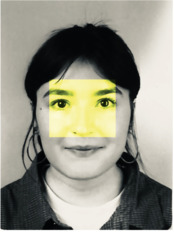

ABOUT

Lola Wels
is gefascineerd door de gelaagdheid van de dagelijkse werkelijkheid. Ze observeert hoe onze omgeving,
gewoontes en ideeën ons vormen, en hoe we deze structuren vaak onbewust accepteren. Door het alledaagse vanuit
onverwachte invalshoeken te benaderen, probeert ze deze mechanismen zichtbaar te maken en nieuwe perspectieven
te openen.
Haar werk beweegt zich tussen het speelse en het kritische. Ze zet alledaagse objecten, situaties en rituelen op
scherp, niet om te veroordelen, maar om ruimte te maken voor reflectie en dialoog. Met een onderzoekende houding
en een liefde voor tastbare experimenten zoekt Lola naar manieren om ons bewust te maken van de keuzes en
aannames die ons denken en doen bepalen. Ze wil vragen oproepen en verhalen zichtbaar maken die anders
onopgemerkt blijven.